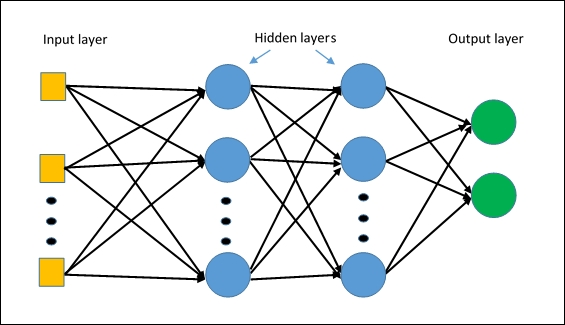
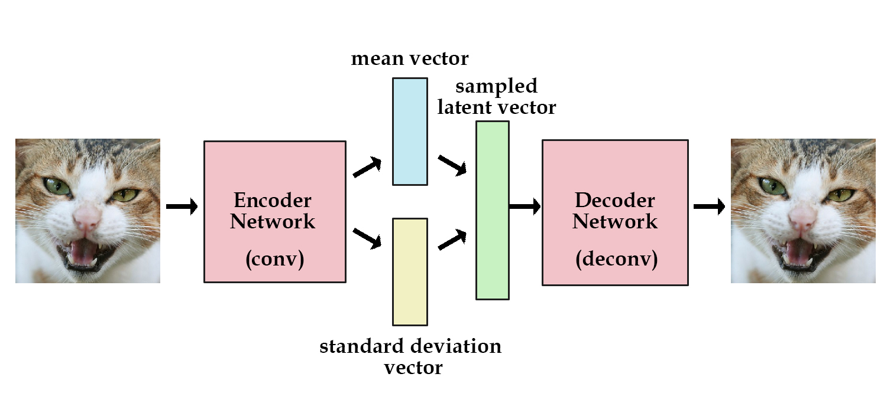

Architectures
Contents
Architectures#
Autoencoder#
An autoencoder is a type of feedforward neural network that attempts to copy its input to its output. Internally, it has a hidden layer, h, that describes a code, used to represent the input. The network consists of two parts:
An encoder function: \(h = f(x)\).
A decoder function, that produces a reconstruction: \(r = g(h)\).
The figure below shows the presented architecture.
{kind=link}
The autoencoder compresses the input into a lower-dimensional code, and then it reconstructs the output from this representation. The code is a compact “summary”, or “compression”, of the input, and it is also called the latent-space representation.
If an autoencoder simply learned to set \(g(f(x))=x\) everywhere, then it would not be very useful; instead, autoencoders are designed to be unable to learn to copy perfectly. They are restricted in ways that allow them to copy only approximately, and to copy only input that resembles the training data. Because the model is forced to prioritize which aspects of the input to copy, it learns useful properties of the data.
In order to build an autoencoder, three things are needed: an encoding method, a decoding method, and a loss function to compare the output with the target.
Both the encoder and the decoder are fully-connected feedforward neural networks. The code is a single layer of an artificial neural network, with the dimensionality of our choice. The number of nodes in the code layer (the code size) is a hyperparameter to be set before training the autoencoder.
The figure below shows the autoencoder architecture. First, the input passes through the encoder, which is a fully-connected neural network, in order to produce the code. The decoder, which has the similar neural network structure, then produces the output by using the code only. The aim is to get an output identical to the input.

Traditionally, autoencoders were used for dimensionality reduction or feature learning. More recently, theoretical connections between autoencoders and latent variable models have brought autoencoders to the forefront of generative modeling. As a compression method, autoencoders do not perform better than their alternatives. And the fact that autoencoders are data-specific makes them impractical as a general technique.
In general, autoencoders have three common use cases:
Data denoising: It should be noted that denoising autoencoders are not meant to automatically denoise an image, instead they were invented to help the hidden layers of the autoencoder learn more robust filters, and reduce the the risk of overfitting.
Dimensionality reduction: Visualizing high-dimensional data is challenging. t-SNE 7 is the most commonly used method, but struggles with large number of dimensions (typically above 32). Therefore, autoencoders can be used as a preprocessing step to reduce the dimensionality, and this compressed representation is used by t-SNE to visualize the data in 2D space.
Variational Autoencoders (VAE): this is a more modern and complex use-case of autoencoders. VAE learns the parameters of the probability distribution modeling the input data, instead of learning an arbitrary function in the case of vanilla autoencoders. By sampling points from this distribution we can also use the VAE as a generative model 8.
Model
An example implementation in PyTorch.
1class Autoencoder(nn.Module):
2 def __init__(self, in_shape):
3 super().__init__()
4 c,h,w = in_shape
5 self.encoder = nn.Sequential(
6 nn.Linear(c*h*w, 128),
7 nn.ReLU(),
8 nn.Linear(128, 64),
9 nn.ReLU(),
10 nn.Linear(64, 12),
11 nn.ReLU()
12 )
13 self.decoder = nn.Sequential(
14 nn.Linear(12, 64),
15 nn.ReLU(),
16 nn.Linear(64, 128),
17 nn.ReLU(),
18 nn.Linear(128, c*h*w),
19 nn.Sigmoid()
20 )
21
22 def forward(self, x):
23 bs,c,h,w = x.size()
24 x = x.view(bs, -1)
25 x = self.encoder(x)
26 x = self.decoder(x)
27 x = x.view(bs, c, h, w)
28 return x
Training
1def train(net, loader, loss_func, optimizer):
2 net.train()
3 for inputs, _ in loader:
4 inputs = Variable(inputs)
5
6 output = net(inputs)
7 loss = loss_func(output, inputs)
8
9 optimizer.zero_grad()
10 loss.backward()
11 optimizer.step()
Further reading
CNN#
The convolutional neural network, or CNN, is a feed-forward neural network which has at least one convolutional layer. This type of deep neural network is used for processing structured arrays of data. It is distinguished from other neural networks by its superior performance with speech, audio, and especially, image data. For the latter data type, CNNs are commonly employed in computer vision tasks, like image classification, since they are especially good at finding out patterns from the input images, such as lines, circles, or more complex objects, e.g., human faces.
Convolutional neural networks comprise many convolutional layers, stacked one on top of the other, in a sequence. The sequential architecture of CNNs allows them to learn hierarchical features. Every layer can recognize shapes, and the deeper the network goes, the more complex are the shapes which can be recognized. The design of convolutional layers in a CNN reflects the structure of the human visual cortex. In fact, our visual cortex is similarly made of different layers, which process an image in our sight by sequentially identifying more and more complex features.
The CNN architecture is made up of three main distinct layers:
Convolutional layer
Pooling layer
Fully-connected (FC) layer
{kind=link}
Overview of CNN architecture. The architecture of CNNs follows this structure, but with a greater number of layers for each layer’s type. The convolutional and pooling layers are layers peculiar to CNNs, while the fully-connected layer, activation function and output layer, are also present in regular feed-forward neural networks. Source: [2]#
When working with image data, the CNN architecture accepts as input a 3D volume, or a 1D vector depending if the image data is in RGB format, for the first case, or in grayscale format, for the latter. Then it transforms the input through different equations, and it outputs a class. The convolutional layer is the first layer of the convolutional neural network. While this first layer can be followed by more convolutional layers, or pooling layers, the fully-connected layer remains the last layer of the network, which outputs the result. At every subsequent convolutional layer, the CNN increases its complexity, and it can identify greater portions in the image. In the first layers, the algorithm can recognize simpler features such as color or edges. Deeper in the network, it becomes able to identify both larger objects in the image and more complex ones. In the last layers, before the image reaches the final FC layer, the CNN identifies the full object in the image.
Model
An example implementation of a CNN in PyTorch.
1class CNN(nn.Module):
2 def __init__(self, in_shape, n_classes):
3 super().__init__()
4 c, w, h = in_shape
5 pool_layers = 2
6 fc_h = int(h / 2**pool_layers)
7 fc_w = int(w / 2**pool_layers)
8 self.features = nn.Sequential(
9 *conv_bn_relu(c, 16, kernel_size=1, stride=1, padding=0),
10 *conv_bn_relu(16, 32, kernel_size=3, stride=1, padding=1),
11 nn.MaxPool2d(kernel_size=2, stride=2), #size/2
12 *conv_bn_relu(32, 64, kernel_size=3, stride=1, padding=1),
13 nn.MaxPool2d(kernel_size=2, stride=2), #size/2
14 )
15 self.classifier = nn.Sequential(
16 *linear_bn_relu_drop(64 * fc_h * fc_w, 128, dropout=0.5),
17 nn.Linear(128, n_classes),
18 nn.Softmax(dim=1)
19 )
20
21 def forward(self, x):
22 x = self.features(x)
23 x = x.view(x.size(0), -1)
24 x = self.classifier(x)
25 return x
Training
1def train(net, loader, loss_func, optimizer):
2 net.train()
3 n_batches = len(loader)
4 for inputs, targets in loader:
5 inputs = Variable(inputs)
6 targets = Variable(targets)
7
8 output = net(inputs)
9 loss = loss_func(output, targets)
10
11 optimizer.zero_grad()
12 loss.backward()
13 optimizer.step()
Further reading
GAN#
A Generative Adversarial Network (GAN) is a type of network which creates novel tensors (often images, voices, etc.). The generative portion of the architecture competes with the discriminator part of the architecture in a zero-sum game. The goal of the generative network is to create novel tensors which the adversarial network attempts to classify as real or fake. The goal of the generative network is generate tensors where the discriminator network determines that the tensor has a 50% chance of being fake and a 50% chance of being real.
Figure from [3].
Model
An example implementation in PyTorch.
Generator
1class Generator(nn.Module):
2 def __init__(self):
3 super()
4 self.net = nn.Sequential(
5 nn.ConvTranspose2d( 200, 32 * 8, 4, 1, 0, bias=False),
6 nn.BatchNorm2d(32 * 8),
7 nn.ReLU(),
8 nn.ConvTranspose2d(32 * 8, 32 * 4, 4, 2, 1, bias=False),
9 nn.BatchNorm2d(32 * 4),
10 nn.ReLU(),
11 nn.ConvTranspose2d( 32 * 4, 32 * 2, 4, 2, 1, bias=False),
12 nn.BatchNorm2d(32 * 2),
13 nn.ReLU(),
14 nn.ConvTranspose2d( 32 * 2, 32, 4, 2, 1, bias=False),
15 nn.BatchNorm2d(32),
16 nn.ReLU(),
17 nn.ConvTranspose2d( 32, 1, 4, 2, 1, bias=False),
18 nn.Tanh()
19 )
20 def forward(self, tens):
21 return self.net(tens)
Discriminator
1class Discriminator(nn.Module):
2 def __init__(self):
3 super()
4 self.net = nn.Sequential(
5 nn.Conv2d(1, 32, 4, 2, 1, bias=False),
6 nn.LeakyReLU(0.2),
7 nn.Conv2d(32, 32 * 2, 4, 2, 1, bias=False),
8 nn.BatchNorm2d(32 * 2),
9 nn.LeakyReLU(0.2),
10 nn.Conv2d(32 * 2, 32 * 4, 4, 2, 1, bias=False),
11 nn.BatchNorm2d(32 * 4),
12 nn.LeakyReLU(0.2),
13 # state size. (32*4) x 8 x 8
14 nn.Conv2d(32 * 4, 32 * 8, 4, 2, 1, bias=False),
15 nn.BatchNorm2d(32 * 8),
16 nn.LeakyReLU(0.2),
17 # state size. (32*8) x 4 x 4
18 nn.Conv2d(32 * 8, 1, 4, 1, 0, bias=False),
19 nn.Sigmoid()
20 )
21
22 def forward(self, tens):
23 return self.net(tens)
Training
1def train(netD, netG, loader, loss_func, optimizerD, optimizerG, num_epochs):
2 netD.train()
3 netG.train()
4 device = "cuda:0" if torch.cuda.is_available() else "cpu"
5 for epoch in range(num_epochs):
6 for i, data in enumerate(loader, 0):
7 netD.zero_grad()
8 realtens = data[0].to(device)
9 b_size = realtens.size(0)
10 label = torch.full((b_size,), 1, dtype=torch.float, device=device) # gen labels
11 output = netD(realtens)
12 errD_real = loss_func(output, label)
13 errD_real.backward() # backprop discriminator fake and real based on label
14 noise = torch.randn(b_size, 200, 1, 1, device=device)
15 fake = netG(noise)
16 label.fill_(0)
17 output = netD(fake.detach()).view(-1)
18 errD_fake = loss_func(output, label)
19 errD_fake.backward() # backprop discriminator fake and real based on label
20 errD = errD_real + errD_fake # discriminator error
21 optimizerD.step()
22 netG.zero_grad()
23 label.fill_(1)
24 output = netD(fake).view(-1)
25 errG = loss_func(output, label) # generator error
26 errG.backward()
27 optimizerG.step()
Further reading
MLP#
A Multi Layer Perceptron (MLP) is a neural network with only fully connected layers. Figure from [5].
Model
An example implementation on FMNIST dataset in PyTorch. Full Code
The input to the network is a vector of size 28*28 i.e.(image from FashionMNIST dataset of dimension 28*28 pixels flattened to sigle dimension vector).
2 fully connected hidden layers.
Output layer with 10 outputs.(10 classes)
1class MLP(nn.Module):
2 def __init__(self):
3 super(MLP,self).__init__()
4 # define layers
5 self.fc1 = nn.Linear(in_features=28*28, out_features=500)
6 self.fc2 = nn.Linear(in_features=500, out_features=200)
7 self.fc3 = nn.Linear(in_features=200, out_features=100)
8 self.out = nn.Linear(in_features=100, out_features=10)
9
10
11 def forward(self, t):
12 # fc1 make input 1 dimentional
13 t = t.view(-1,28*28)
14 t = self.fc1(t)
15 t = F.relu(t)
16 # fc2
17 t = self.fc2(t)
18 t = F.relu(t)
19 # fc3
20 t = self.fc3(t)
21 t = F.relu(t)
22 # output
23 t = self.out(t)
24 return t
Training
1def train(net, loader, loss_func, optimizer):
2 net.train()
3 n_batches = len(loader)
4 for inputs, targets in loader:
5 inputs = Variable(inputs)
6 targets = Variable(targets)
7
8 output = net(inputs)
9 loss = loss_func(output, targets)
10
11 optimizer.zero_grad()
12 loss.backward()
13 optimizer.step()
14 # print statistics
15 running_loss = loss.item()
16 print('Training loss: %.3f' %( running_loss))
Evaluating
1def main():
2 train_set = torchvision.datasets.FashionMNIST(
3 root = './FMNIST',
4 train = True,
5 download = False,
6 transform = transforms.Compose([
7 transforms.ToTensor()
8 ])
9 )
10 mlp = MLP()
11 loader = torch.utils.data.DataLoader(train_set, batch_size = 1000)
12 optimizer = optim.Adam(mlp.parameters(), lr=0.01)
13 loss_func=nn.CrossEntropyLoss()
14 for i in range(0,15):
15 train(mlp,loader,loss_func,optimizer)
16 print("Finished Training")
17 torch.save(mlp.state_dict(), "./mlpmodel.pt")
18 test_set = torchvision.datasets.FashionMNIST(
19 root = './FMNIST',
20 train = False,
21 download = False,
22 transform = transforms.Compose([
23 transforms.ToTensor()
24 ])
25 )
26 testloader = torch.utils.data.DataLoader(test_set, batch_size=4)
27 correct = 0
28 total = 0
29 with torch.no_grad():
30 for data in testloader:
31 images, labels = data
32 outputs = mlp(images)
33 _, predicted = torch.max(outputs.data, 1)
34 total += labels.size(0)
35 correct += (predicted == labels).sum().item()
36 print('Accuracy of the network on the 10000 test images: %d %%' % (
37 100 * correct / total))
Further reading
TODO
RNN#
Description of RNN use case and basic architecture.

Model
1class RNN(nn.Module):
2 def __init__(self, n_classes):
3 super().__init__()
4 self.hid_fc = nn.Linear(185, 128)
5 self.out_fc = nn.Linear(185, n_classes)
6 self.softmax = nn.LogSoftmax()
7
8 def forward(self, inputs, hidden):
9 inputs = inputs.view(1,-1)
10 combined = torch.cat([inputs, hidden], dim=1)
11 hid_out = self.hid_fc(combined)
12 out = self.out_fc(combined)
13 out = self.softmax(out)
14 return out, hid_out
Training
In this example, our input is a list of last names, where each name is a variable length array of one-hot encoded characters. Our target is is a list of indices representing the class (language) of the name.
For each input name..
Initialize the hidden vector
Loop through the characters and predict the class
Pass the final character’s prediction to the loss function
Backprop and update the weights
1def train(model, inputs, targets):
2 for i in range(len(inputs)):
3 target = Variable(targets[i])
4 name = inputs[i]
5 hidden = Variable(torch.zeros(1,128))
6 model.zero_grad()
7
8 for char in name:
9 input_ = Variable(torch.FloatTensor(char))
10 pred, hidden = model(input_, hidden)
11
12 loss = criterion(pred, target)
13 loss.backward()
14
15 for p in model.parameters():
16 p.data.add_(-.001, p.grad.data)
Further reading
VAE#
Autoencoders can encode an input image to a latent vector and decode it, but they can’t generate novel images. Variational Autoencoders (VAE) solve this problem by adding a constraint: the latent vector representation should model a unit gaussian distribution. The Encoder returns the mean and variance of the learned gaussian. To generate a new image, we pass a new mean and variance to the Decoder. In other words, we “sample a latent vector” from the gaussian and pass it to the Decoder. It also improves network generalization and avoids memorization. Figure from [4].
Loss Function
The VAE loss function combines reconstruction loss (e.g. Cross Entropy, MSE) with KL divergence.
1def vae_loss(output, input, mean, logvar, loss_func):
2 recon_loss = loss_func(output, input)
3 kl_loss = torch.mean(0.5 * torch.sum(
4 torch.exp(logvar) + mean**2 - 1. - logvar, 1))
5 return recon_loss + kl_loss
Model
An example implementation in PyTorch of a Convolutional Variational Autoencoder.
1class VAE(nn.Module):
2 def __init__(self, in_shape, n_latent):
3 super().__init__()
4 self.in_shape = in_shape
5 self.n_latent = n_latent
6 c,h,w = in_shape
7 self.z_dim = h//2**2 # receptive field downsampled 2 times
8 self.encoder = nn.Sequential(
9 nn.BatchNorm2d(c),
10 nn.Conv2d(c, 32, kernel_size=4, stride=2, padding=1), # 32, 16, 16
11 nn.BatchNorm2d(32),
12 nn.LeakyReLU(),
13 nn.Conv2d(32, 64, kernel_size=4, stride=2, padding=1), # 32, 8, 8
14 nn.BatchNorm2d(64),
15 nn.LeakyReLU(),
16 )
17 self.z_mean = nn.Linear(64 * self.z_dim**2, n_latent)
18 self.z_var = nn.Linear(64 * self.z_dim**2, n_latent)
19 self.z_develop = nn.Linear(n_latent, 64 * self.z_dim**2)
20 self.decoder = nn.Sequential(
21 nn.ConvTranspose2d(64, 32, kernel_size=3, stride=2, padding=0),
22 nn.BatchNorm2d(32),
23 nn.ReLU(),
24 nn.ConvTranspose2d(32, 1, kernel_size=3, stride=2, padding=1),
25 CenterCrop(h,w),
26 nn.Sigmoid()
27 )
28
29 def sample_z(self, mean, logvar):
30 stddev = torch.exp(0.5 * logvar)
31 noise = Variable(torch.randn(stddev.size()))
32 return (noise * stddev) + mean
33
34 def encode(self, x):
35 x = self.encoder(x)
36 x = x.view(x.size(0), -1)
37 mean = self.z_mean(x)
38 var = self.z_var(x)
39 return mean, var
40
41 def decode(self, z):
42 out = self.z_develop(z)
43 out = out.view(z.size(0), 64, self.z_dim, self.z_dim)
44 out = self.decoder(out)
45 return out
46
47 def forward(self, x):
48 mean, logvar = self.encode(x)
49 z = self.sample_z(mean, logvar)
50 out = self.decode(z)
51 return out, mean, logvar
Training
1def train(model, loader, loss_func, optimizer):
2 model.train()
3 for inputs, _ in loader:
4 inputs = Variable(inputs)
5
6 output, mean, logvar = model(inputs)
7 loss = vae_loss(output, inputs, mean, logvar, loss_func)
8
9 optimizer.zero_grad()
10 loss.backward()
11 optimizer.step()
Further reading
References
- 1
https://hackernoon.com/autoencoders-deep-learning-bits-1-11731e200694
- 2
https://iq.opengenus.org/basics-of-machine-learning-image-classification-techniques/
- 3
http://guertl.me/post/162759264070/generative-adversarial-networks
- 4
- 5
`Applied Deep Learning - Part 3: Autoencoders
<https://towardsdatascience .com/applied-deep-learning-part-3-autoencoders-1c083af4d798/>`__
- 6
`Deep Learning Book - Autoencoders <https://www.deeplearningbook
.org/contents/autoencoders.html/>`__